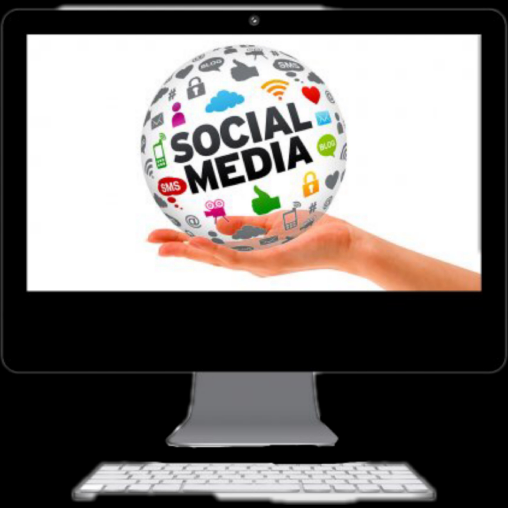

Regresar
LAS REDES SOCIALES COMO UNA HERRAMIENTA PODEROSA PARA LA ADQUISICIÓN DE CLIENTES Y PROMOCIÓN DE PRODUCTOS
La manera en que las empresas conectan con sus clientes, y con el público general, ha cambiado drásticamente. Y las empresas que no manejan el
marketing por internet y redes sociales, se están quedando en el pasado. Las viejas formas en que las empresas solían manejar su mercadeo,
están siendo aplastadas cada día más por el marketing online y todas las ventajas que este tiene que ofrecer, que en realidad, son muchísimas.
Conocer cómo se maneja este tipo de marketing, cuáles son las principales herramientas del marketing digital y cómo las redes sociales se ven
involucradas en todo esto, es fundamental para cualquier empresa que realmente desee surgir.
El marketing digital se trata de aplicar estrategias e ideas para comercializar tu negocio/servicio/producto a través de los medios digitales.
Es decir, a través de las páginas web, y por supuesto, las redes sociales. Como lo ves, el marketing digital contiene dos grandes formas de
comercializar tu producto. Bien sea a través de una página web propia, que será a la vez tu mayor presencia online, o utilizando una de las
varias redes sociales como herramienta. El punto es que, cada una de estas redes sociales tiene millones de usuarios activos que diariamente
observan y consumen diferentes productos. Es un mercado de miles de personas, que a diario en micro momentos consumen diferente contenido de
acuerdo a sus intereses. Eso quiere decir que tienes a tu alcance la posibilidad de contactar con miles de clientes potenciales, y todo a
través del internet de forma fácil y sumamente cómoda.
Allí es que recaen los beneficios del marketing digital. Además de esto, implementar o incluir las redes sociales en el plan de marketing de
tu empresa, no solo es un gran medio de publicidad y mercadeo, sino que además es considerablemente más económico que otros métodos.
¿Por qué deberías incluir a las redes sociales en tu plan de marketing digital? Las empresas siempre suelen tener un objetivo mayor en mente,
y ese es el de aumentar las ventas. Por esta razón, incluir el uso de las redes sociales en un plan de mercadeo es tan importante: Ayuda de
forma directa a aumentar las ventas de una empresa, casi de forma instantánea. El uso adecuado de las redes sociales no sólo te permite
obtener una mayor exposición a personas que antes posiblemente ni siquiera conocían tu empresa, sino que les permite a ellos interactuar
contigo de forma mucho más directa. Es decir, las redes sociales te permiten contactar e interactuar directamente con tus clientes o clientes
potenciales, sin ningún tipo de intermediario, de forma mucho más rápida, sencilla y económica en comparación con otros medios tradicionales
de publicidad.
El uso de las redes sociales te ayuda a redefinir tu marca, y que todo el mundo se entere de esto. Además, te permite cambiar la forma en que
los demás perciben tu empresa. Las redes sociales actúan como una vitrina de respuesta casi inmediata. Las personas pueden ver gran parte de
lo que haces y de lo que se basa tu empresa, y sí les interesan lo que ven, incluso pueden dirigirse a tu página web e interactuar mucho más
con tu producto. Al usar una red social adecuada para los objetivos de la marca, automáticamente cuentas con una fuente de datos que te permite
saber de mejor forma cómo se comportan tus clientes, que les gusta realmente, y que no. Elige la red social que mejor se adapte a ti.
Ya quedó bastante claro lo importante que es involucrar a las redes sociales dentro de tu plan de marketing de empresas, y por qué deberías
comenzar a tomar esto en cuenta lo antes posible. Sin embargo, ni verás ningún beneficio, ni verás un aumento significativo en tus ventas,
sino te tomas el tiempo de conocer las redes sociales, y elegir cuál es la correcta según tu tipo de empresa. Ahora bien, esto dependerá
directamente de tu empresa, tus objetivos y lo que buscas. Es por ello que es importante que le eches un vistazo a tus objetivos principales
antes de elegir una o varias redes sociales para tu negocio. Eso se debe a que no todas las redes sociales son iguales, y no todas ofrecen
el mismo tipo de oportunidades. Por lo que es realmente importante que conozcas cuales son una buena opción, y cuáles tal vez no se adecuan
a tus necesidades.
Instagram:
Es bastante obvio que instagram es el monstruo a tener en cuenta dentro de las redes sociales, pues las posibilidades que ofrece son, en
realidad, bastante altas, y se adapta a cualquier tipo de empresa. Esta una red social con millones de seguidores activos que consumen
productos diariamente, la cual acepta publicidad, y te deja contactar de forma directa con tus clientes. Es, sin duda alguna, la opción
perfecta. Independientemente de si estas vendiendo un producto, o un servicio, Instagram prácticamente funciona con casi cualquier tipo
de empresa, y es además excelente para recolectar información valiosa.
Facebook:
Otro gigante de las redes sociales, perfecto para empresas que además posean ya una presencia online a través de su propia página web.
Facebook es la opción ideal para este tipo de negocios. Esta red social te permite crear desde páginas en su plataforma, hasta grupos.
Esto es perfecto no solamente para lograr que las personas se dirijan directamente a tu página web, sino que además te permite ampliar
de forma significativa tu lista de email marketing, suponiendo que desees incluir esto también en tu plan de mercadeo.
Sin importar de qué se trate tu negocio, implementar un plan de marketing en redes sociales es una de las herramientas más poderosas de estos
tiempos.

